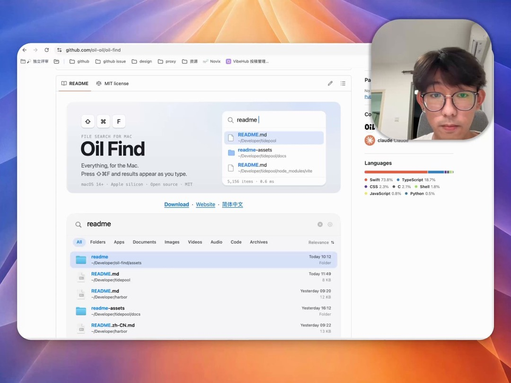
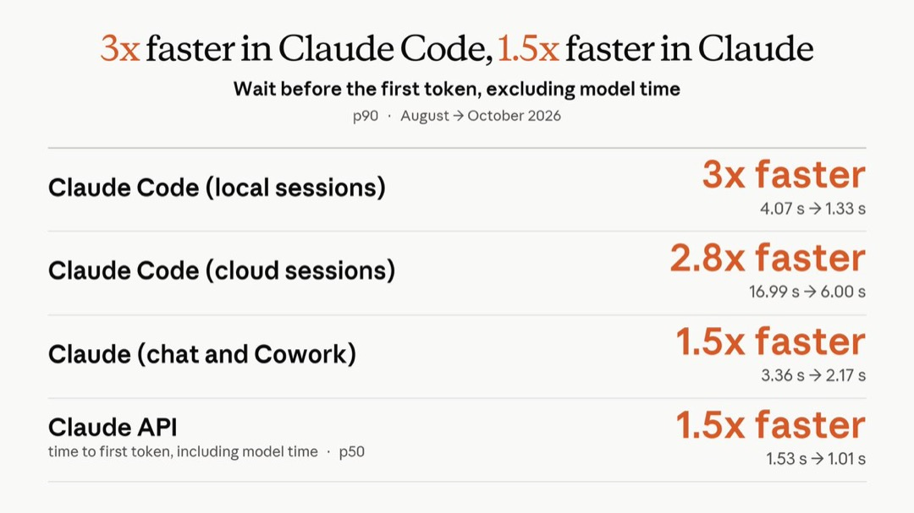

本期速览
01 企业RAG新增知识持续管理流水线
02 密歇根大学开源智能体软件工程课
03 Claude Code 新增Mod机制
04 CoreWeave 违约概率升至55%
05 Bing 站长工具新增AI主题监测
07 Claude Code 用评审链替代人工
01｜企业RAG新增知识持续管理流水线
来源（X） · @UPing123zzz · 2026-10-16 23:50
最近又重新研究了一下，发现自己当时的理解其实还不够完整。以前我把 RAG 理解成两条流水线，一条负责把企业知识整理入库，另一条负责根据用户的问题检索、生成答案。现在我觉得，还应该加上第三条：知识的持续管理。
而且第三条可能才是真正决定 RAG 能不能商用的东西。
举个很简单的例子。一家企业以前的售后政策是保修 12 个月，后来改成了 24 个月。两份 PDF 都在知识库里，AI 检索的时候应该相信哪一份？如果新政策只适用于某些地区、某些产品，又该怎么办？
你把 Embedding、Hybrid Search、Rerank 做得再好，也不一定能解决这个问题。因为这里已经不只是检索技术的问题了，而是版本管理、生效时间、权限和业务规则的问题。
还有一个变化是 Agentic Retrieval，以前的 RAG，大部分是用户提出问题，系统检索一次，把结果交给 LLM。现在面对复杂问题，可以先让模型理解用户到底想问什么，再把问题拆开，去不同的知识源寻找证据，必要时进行多轮检索。
比如分析一家企业最近三个月的售后问题，可能既要查历史政策，也要查投诉记录，还要从数据库里获取实际数据。这里不是简单地往向量数据库里搜索几个 Chunk 就能完成的。
但我也越来越觉得，没必要为了技术复杂而复杂。不是每个问题都需要 Agentic Retrieval，也不是每家企业都需要 GraphRAG。简单问题能通过一次检索解决，就没必要增加那么多模型调用、延迟和成本。
另一个我之前忽略的东西是评测，一个知识库今天能正确回答 100 个问题，不代表下个月还能正确回答。新文件上传了，旧文件删除了，政策发生变化了，员工权限调整了，系统还能不能正常工作？遇到知识库没有答案的问题，AI 会不会自己编？回答附带了引用，引用的资料真的能证明这个结论吗？
这些东西比单纯做一个漂亮的聊天界面难多了。
AI Coding 确实让这一切的开发门槛降低了很多。Parser、API、数据库、检索服务、后台管理，很多东西都可以交给 Codex、Claude Code 去实现。
但我现在越来越清楚，AI 能帮你把代码写出来，不代表它能替你决定什么样的系统才算正确。
企业哪份资料才是权威版本，哪些员工能看到哪些内容，什么情况下必须拒绝回答，这些问题最终都需要人去定义规则、验证结果。
所以我现在不太愿意再把 RAG 理解成一个知识库聊天机器人了。它更像是企业给 AI 建立的一层知识基础设施。把原本散落在文档、网页、数据库里的信息，整理成一套能够持续更新、控制权限、追溯来源、验证结果的知识服务。
以后无论上面接的是客服 Agent、销售 Agent、内部 Copilot，还是其他 AI 系统，都可以复用这层知识能力，而不是每做一个 Agent 就重新造一套知识库。
以前我关心的是怎么把 RAG 做出来。现在我更关心的是这套 RAG 上线半年以后，企业还敢不敢相信它给出的答案？
我觉得这才是企业 RAG 真正的难点，也是它真正有价值的地方。
以后 AI 写代码可能会越来越便宜，但把企业混乱的知识变成一套可靠、可维护、能真正服务业务的系统，依然是一件很有门槛的事情。
引用内容
Ethan 恩宇 @UPing123zzz
把 PDF 切成 Chunk，Embedding 一下，丢进向量数据库，然后接个大模型。
这确实能做出 Demo，但离真正的企业知识库还差得很远。
RAG 的原理其实特别简单：用户问一个问题，系统先从企业内部找到相关资料，再把资料交给 LLM 回答。所以 RAG 最重要的可能根本不是最后那个 LLM，而是前面的 Retrieval。如果检索出来的东西就是错的，模型越强，只会把错误答案说得越像真的。
真正给企业做 RAG，我现在会把它理解成两条流水线。
第一条是知识入库：
PDF / Word / 网页 → 文档解析 → OCR/表格/结构恢复 → Chunk → Metadata → Embedding → 索引。
第二条是用户提问：
Question → Query 理解 → 权限过滤 → Hybrid Search → Rerank → Context → LLM → Answer + 引用来源。
这里面最容易被低估的是第一条。比如我们前面聊的 PDF，人看到的是章节、表格和上下文，但机器拿到的可能只是坐标和文字。如果这里解析错了，后面的 Embedding、向量数据库、Rerank 全部建立在错误数据上。现在一些 Document AI 工具已经开始把 PDF 恢复成包含章节、表格、图片、页眉页脚和来源信息的结构化文档，而不是单纯抽文本。
第二个容易踩的坑是：不要迷信纯向量搜索。
企业知识里有大量 SKU、产品型号、合同编号、人名和数字。语义搜索很强，但精确关键词同样重要。所以真正成熟一点的 RAG，通常会开始做 Dense + Keyword/Sparse 的 Hybrid Search，再把召回结果交给 Reranker 排一次。
但企业 RAG 真正复杂的地方还不是这些，而是：旧文档怎么办？新旧政策冲突怎么办？不同部门权限怎么办？知识什么时候更新？回答错了怎么发现？
所以我现在越来越觉得，企业 RAG 首先是知识工程，然后才是大模型工程。
而 AI Coding 又把这件事情改变了一次。
以前做这套东西，你还要花大量时间写 Parser、API、Vector DB、后台、Docker。现在这些工程代码完全可以大量交给 Codex、Claude Code 之类的 Coding Agent 去实现。
于是人的价值反而往上移动了。
你真正需要知道的是：为什么这个 PDF 要结构化解析？为什么这里要 Hybrid Search？为什么这里需要 Rerank？为什么这个问题应该查知识库，而另一个问题应该直接查 SQL？
AI 可以帮你写 RAG，但你必须知道什么才是一套正确的 RAG。
所以如果今天让我重新理解企业 AI，我不会再把 RAG 看成一个“知识库聊天机器人”。
我会把它看成一层新的企业基础设施：
把散落在 PDF、Word、网页、数据库和员工脑子里的知识，变成 AI 可以检索、理解、引用，并且有权限地使用的知识层。
等这一层真正建立起来，上面接的就不只是 Chatbot 了。
还可以是客服 Agent、销售 Agent、内部 Copilot、内容 Agent、决策 Agent……
RAG 真正有价值的地方，从来不是“让 AI 可以读 PDF”。
而是：
让一个企业第一次拥有一层，可以被 AI 调用的知识系统。
这可能才是企业 RAG 真正值得做的地方。
02｜密歇根大学开源智能体软件工程课
来源（X） · @Ryrenz · 2026-10-17 11:05
这是该校 2026 年秋季 EECS 498-016《应用型智能体软件工程》的官方课程仓库，讲义、实验、课堂演示代码全套都在，还挂着课程官网 http://eecs498-aase.github.io。
有意思的是这仓库自己就是一份「agent 干活」的样本：翻一下它的 PR 列表，十三个 PR 全是 claude[bot] 提的，改讲义、重排幻灯片、把临近的作业截止日期同步进去，老师基本是在 review agent 的产出。
eecs498-aase/materials 里的东西是跟着课程进度长的。讲座按 L01、L02 编号分好，每讲都有 slides.md 源文件和编好的 pdf、pptx；labs 目录是配套实验；demos 目录放的是课堂上真跑的代码库，比如一个命令行笔记工具、一份会议记录分析。还有个 egm 目录装着五个叫 Elephant-Goldfish Model 的 skill。幻灯片在每次上课前后发布，所以你是跟着课表在同步拿材料。
想系统学怎么和 agent 一起写代码，这可能是眼下最新鲜的一份公开讲义。
GitHub：https://github.com/eecs498-aase/materials
03｜Claude Code 新增Mod机制
来源（X） · @vincemask · 2026-10-17 08:46
Claude Code 2.1.287，正式引入 Mod
Mod 可以深入 Claude Code 内部，监听、修改或拦截事件，还能自定义交互界面。
几个典型场景：
1、自动调整思考力度：根据任务复杂度动态设置 effort。
2、评估回答质量：为 Claude 的每次回复计算可读性评分。
3、控制 Git 提交：测试未通过时暂停 commit。
那么，Mod、Skill 和 Hook 怎么选？
CLAUDE.md：定义项目规则。
Skill：封装可复用的工作流程。
Hook：在特定事件触发检查或自动化操作。
Mod：深入控制 Agent 行为，扩展 Claude Code 界面。
能用 Skill、Hook 解决的，就没必要上 Mod。 当你需要控制内部执行流程或定制交互界面时，再考虑 Mod。
Claude Code 创建者 Boris Cherny 评价：
“Mods are absolutely insane.”
引用内容
Vince 聊开发 @vincemask
中文译文
原文
04｜CoreWeave 违约概率升至55%
来源（X） · @MrPingChecks · 2026-10-17 10:39
这事的导火索在本周二。Chamath 在 X 上指出 CoreWeave 一笔债的收益率到了 15%，马斯克在底下回了一个词“yikes”（哎哟，吓人），直接上了一堆新闻。第二天 CoreWeave 和同类公司全线大跌，CoreWeave、IREN、Nebius 这类“新云”公司这周都跌了约 20%。周五 CoreWeave 又跌 11.9%，一周跌了约 25%。
硅谷最火的科技投资播客 All-In 最新一期，Chamath、Sacks、Jason 加上代班的 a16z 联合创始人 Ben Horowitz，把它扒了个底朝天。套路很眼熟：签下微软大单、拿合同去借钱、买英伟达芯片收租。已经借了约 350 亿美元，还得再借约 350 亿，75% 的收入绑在三家客户身上。
更憋屈的是它把“期房卖早了”。长约都是固定价格，现在现货算力价格涨上去了，它多赚不到。Chamath 甚至建议它干脆赔钱毁掉部分合同、改卖现货，说这中间差了两三百亿美元。
现在债主先慌了。Chamath 算了笔账：它的违约保险这周涨到约 953 个基点，5 年违约概率约 55%，“基本是抛硬币”，“这不是我说的，是保险市场说的”。一笔 GPU 贷款的利率已经涨到 15%。他也承认表面上不危险，资产约 780 到 800 亿美元，债约 350 亿；但他团队估算，离触发债务条款只差正负 50 亿美元左右，这是一场“信心游戏”。
Sacks 觉得这只是波动：它实际付的利息还是 9.6%，二级市场打折影响的是以后借钱的成本。最该盯的是回本周期，CoreWeave 要 2.5 年，马斯克的 SpaceX 卖现货算力约 1 年就回本。
Ben 则说 a16z 一家这类公司都不投。1999 年带宽每兆 1500 美元，只能签三年长约，到 2001 年跌到 50 美元，借钱囤带宽的“直接死了”。不过他也承认现在不一样，算力严重短缺，亚马逊 CEO 说“2028 年以后都卖光了”。
最后 Chamath 点破了真正的死穴：10 年期美债要是涨到 5.5% 到 6%，“所有靠借钱赚利差的生意都会被碾死”。接下来一个月见分晓，就看它还能不能借到那 350 亿。
05｜Bing 站长工具新增AI主题监测
来源（X） · @capmmk · 2026-10-17 09:03
Bing Webmaster Tools 的 AI Performance 报告里，新加了一个测试版功能，叫 Topics Portfolio。
它会把你在 Copilot 和 Bing AI 回答里被引用的查询，按主题分好类。每个主题有多热、有多少网站在抢，一眼就能看出来。最有用的是，它会把别人被 AI 引用了、你却没被引用的查询直接列出来。
不过数据都是估算的，分类也是 AI 做的，不一定准，小网站还可能看不到这个功能。微软自己也说了，只能当方向参考。
GEO 终于有官方的缺口分析工具了。
06｜Codex 复用子Agent上下文提效
来源（X） · @thsottiaux · 2026-10-17 07:55
中文译文
第12天/
我们对 Codex 和 Work 进行了改进，提高了你获得的有效使用量。我们通过在子代理之间复用上下文、延长上下文缓存时间，以及改进请求路由以提高缓存命中率来实现这一目标。
原文
Day 12/
We’ve made improvements to Codex & Work that increase the effective usage you get. We achieved this by reusing context across subagents, keeping context cached longer, and improved request routing that allows us to increase cache hits.
07｜Claude Code 用评审链替代人工
来源（X） · @Xudong07452910 · 2026-10-17 09:01
Anthropic 最新这篇文章给了一个很这得参考的答案。
他们已经把 Code Review 从 PR 最后的人工关卡，拆成了一条持续验证链。
代码提交前，Agent 自己跑测试，再开一个干净 Context 的 Subagent 看 diff；PR 创建后自动跑 Claude Review 和 Security Review；人主要盯风险、架构和改动意图；合并后还有 Feature Flag、灰度和快速回滚。
按 Anthropic 的内部数据，6 月到 9 月合并的 PR 数量翻了一倍多，回滚率反而下降超过 40%。研究版 AI Review 上线后，有实质性 Review 意见的 PR 也从 16% 提到了 54%。
这里真正值得看的，是 AI Coding 把代码生产速度拉高以后，Code Review 也开始被重新设计。
人以后肯定越少逐行看 diff，把注意力留给意图、系统影响和那些机器很难替你承担的判断。
甚至每次漏掉一个 Bug，都可以继续写回 CLAUDE.md、REVIEW.md 或新的自动检查里，让下一次 Review 更强。
代码可以越写越快，真正要跟着一起扩容的是验证系统。
文章
https://claude.dev/blog/solving-code-review-at-anthropic/
08｜Oil Find 索引Agent会话话题
来源（X） · @I_am_oil_oil · 2026-10-16 22:32
Codex 内置的话题搜索速度好慢而且有点卡，用 Oil Find 现在可以直接搜索 CodeX、Claude Code、Workbuddy 的的话题信息，点击可以直接切到对应话题
搜索速度非常快，和文件搜索一样是通过创建索引的方式来快速搜索的
非常清爽实用的小工具，欢迎大家来支持一个 Star～
开源仓库：https://github.com/oil-oil/oil-find

09｜Claude Code 压缩会话提速
来源（X） · @ClaudeDevs · 2026-10-17 05:34
中文译文
我们持续提升 Claude 的性能，你可能已经注意到它开始响应更快了！
Claude Code 现在会对每轮发送的对话进行 gzip 压缩，从而更快地到达模型。云端会话也会在你开始输入时立即启动。
原文
We keep improving performance across Claude, and you may have noticed it starts responding sooner!
Claude Code now gzips the conversation it sends on every turn, so it reaches the model faster. Cloud sessions also start up as soon as you start typing.
